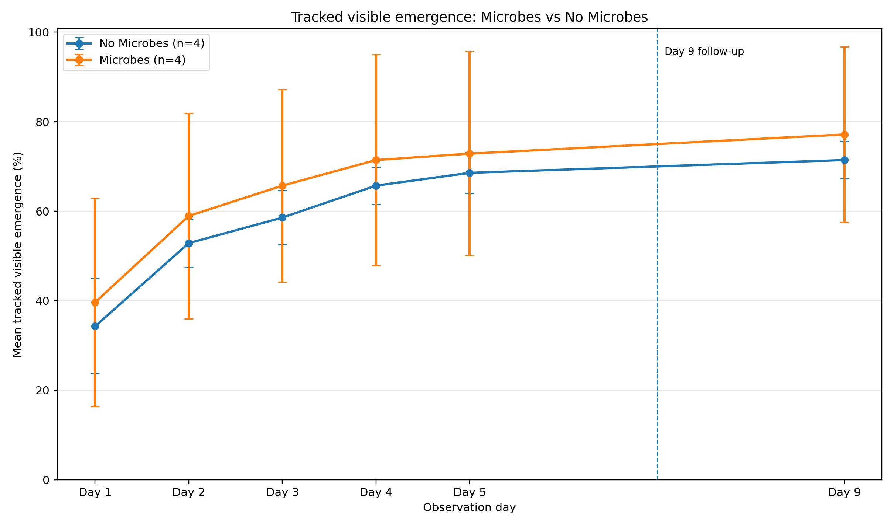
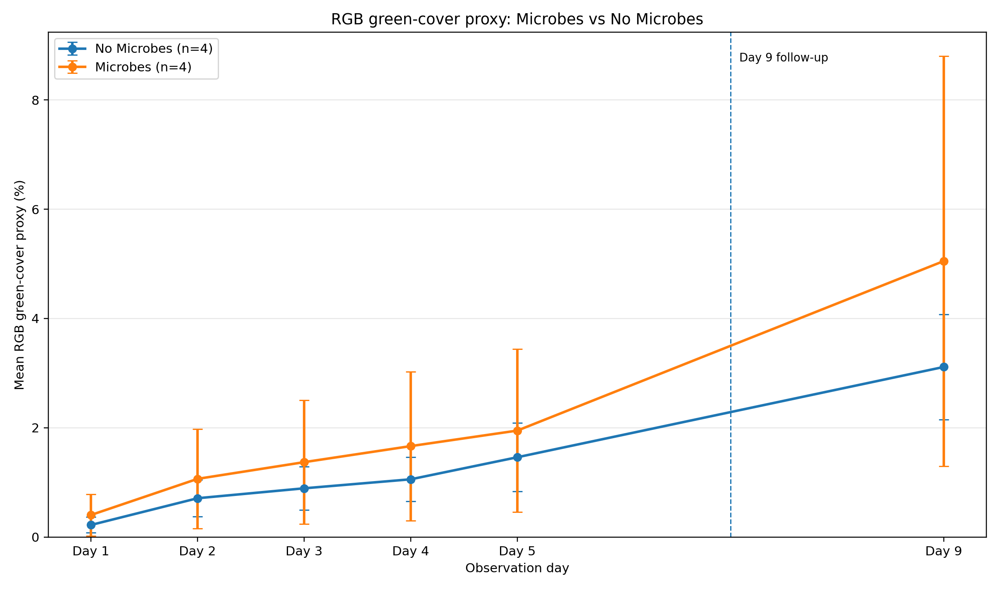
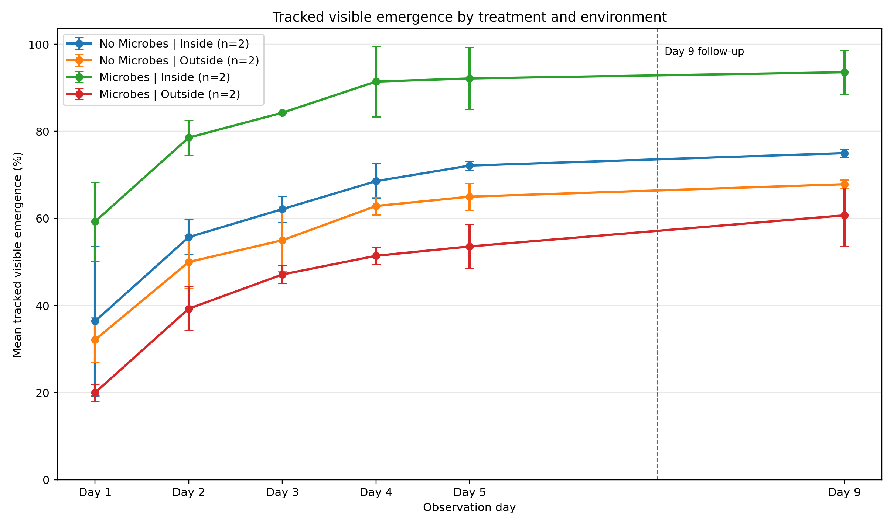
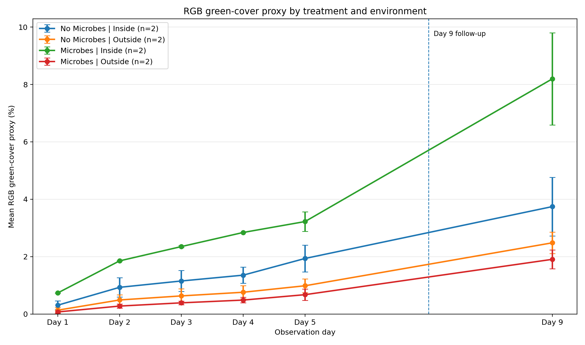
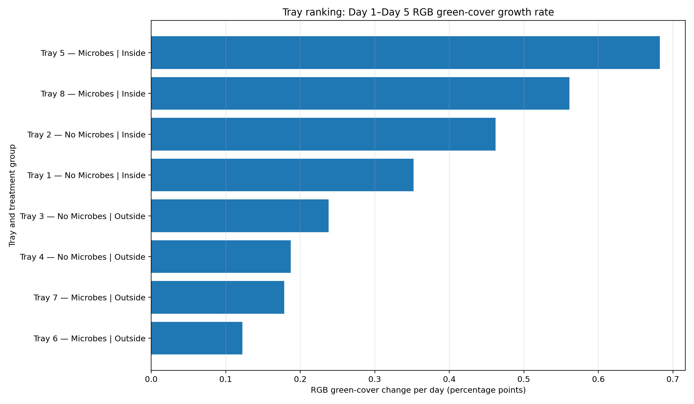
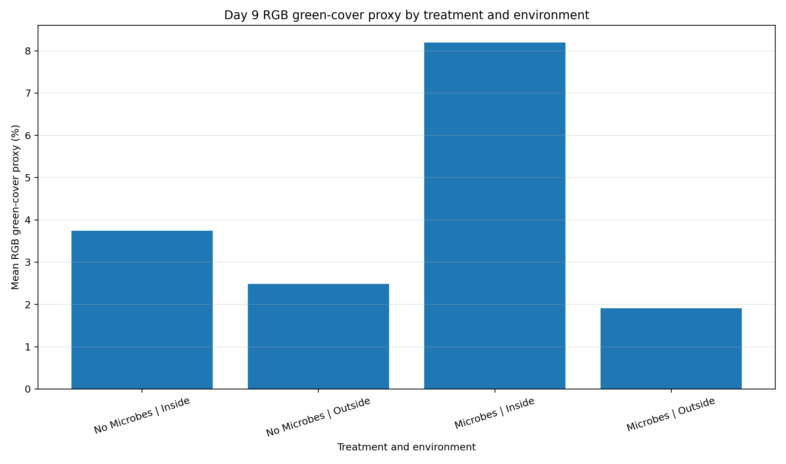

These comparisons are descriptive. RGB green cover is an image-based growth proxy, not direct biomass. Each treatment × environment group has two trays, so inside/outside patterns should not be treated as formal proof.
The higher Day 5 mean RGB green-cover proxy between the two primary treatments was observed for Microbes. The highest Day 5 green-cover proxy among all treatment × environment groups was observed for Microbes | Inside. The highest Day 1–Day 5 green-cover growth rate was observed for Microbes | Inside.
| group | tray_count | mean_day5_tracked_emergence_percent | mean_day5_green_cover_percent | mean_green_cover_rate_day1_to_day5_pp_per_day | mean_day9_green_cover_percent |
|---|---|---|---|---|---|
| Microbes | 4 | 72.857 | 1.949 | 0.386 | 5.051 |
| No Microbes | 4 | 68.572 | 1.461 | 0.310 | 3.113 |
| group | tray_count | mean_day5_tracked_emergence_percent | mean_day5_green_cover_percent | mean_green_cover_rate_day1_to_day5_pp_per_day | mean_day9_green_cover_percent |
|---|---|---|---|---|---|
| Microbes | Inside | 2 | 92.143 | 3.223 | 0.622 | 8.195 |
| Microbes | Outside | 2 | 53.572 | 0.676 | 0.150 | 1.907 |
| No Microbes | Inside | 2 | 72.143 | 1.937 | 0.407 | 3.744 |
| No Microbes | Outside | 2 | 65.000 | 0.986 | 0.213 | 2.482 |
| tray | treatment | environment | green_cover_rate_day1_to_day5_pp_per_day | day5_tracked_emergence_percent | day9_green_cover_percent |
|---|---|---|---|---|---|
| Tray 5 | Microbes | Inside | 0.683 | 97.143 | 9.330 |
| Tray 8 | Microbes | Inside | 0.561 | 87.143 | 7.060 |
| Tray 2 | No Microbes | Inside | 0.462 | 72.857 | 3.024 |
| Tray 1 | No Microbes | Inside | 0.352 | 71.429 | 4.464 |
| Tray 3 | No Microbes | Outside | 0.238 | 67.143 | 2.748 |
| Tray 4 | No Microbes | Outside | 0.187 | 62.857 | 2.217 |
| Tray 7 | Microbes | Outside | 0.179 | 57.143 | 2.141 |
| Tray 6 | Microbes | Outside | 0.122 | 50.000 | 1.673 |





